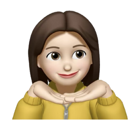

Small Wings,
Big Impact
Plant native flowers. Protect the Mission Blue Butterfly and its habitat.

Plant native flowers. Protect the Mission Blue Butterfly and its habitat.
An exhibition poster communicating the show's ethos without depicting the featured artwork.
An exhibition poster using a gas can as a visual metaphor for creative energy and change.
A playful kombucha packaging concept inspired by the fear of germs.